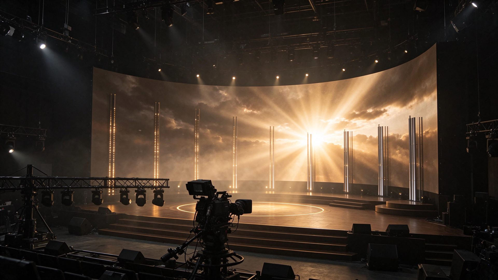

01
央视大屏传播
以总台核心资源为支点，为品牌争取最高规格的曝光位与话语场，让“国家级”成为品牌的默认标签。
- 总台核心资源精准投放
- 头部节目深度合作
- 纪录片定制植入
中创盛京专注央党媒资源整合，以“大屏 + 内容 + 新媒体”三位一体传播模型，把国家级平台的公信力，转化为品牌可感知、可衡量、可沉淀的增长资产。
中创盛京是一家专注央党媒资源整合的创新型文化传媒公司，核心层均是传媒和营销界的精英，曾服务于世界 500 强、央企国企、行业龙头，打造过多个传播、营销案例和 IP。
我们相信，品牌真正的护城河，不止于一次曝光，而在于被国家级平台反复讲述、被权威内容长期背书、被用户在每一个触点上记住的能力。
通过央党媒“大屏 + 内容 + 新媒体”资源整合，实现品牌声量、权威背书与销售转化的深度融合。
以纪录片、文化节目、融媒体内容为载体重构品牌叙事，让商业信息拥有被观看、被记住的品质。
→依托总台核心资源与头部节目，在国家级平台上集中释放，形成品牌的权威背书与社交话题。
→以央视新媒体、新华网及央党媒矩阵完成二次传播与长尾承接，把关注度沉淀为可转化的用户资产。
以央媒公信力赋能品牌，以内容创新驱动品销闭环——从国家级大屏，到国家级 IP，再到央党媒新媒体矩阵。

以总台核心资源为支点，为品牌争取最高规格的曝光位与话语场，让“国家级”成为品牌的默认标签。
与国家级平台联合开发纪录片、文化节目与融媒体项目，把品牌故事写进具备长期价值的优质内容资产。
以国家级新媒体的权威属性完成二次传播，把大屏带来的关注度，转化为可持续运营的用户与内容资产。
从资源卡位、内容共创到矩阵分发，每一环都可单独执行，也可整合交付。
锚定总台最具公信力的稀缺位置，以最少数量的曝光，完成品牌高度的确认。
进入现象级节目的内容内核，与节目调性共生，让品牌成为叙事的一部分而非插播的一段。
以纪录片语言重塑品牌故事，形成可长期复用、可持续传播的品牌内容资产。
与国家级平台共建 IP，把品牌从“广告主”变为“出品方”，共享 IP 的长期价值与版权收益。
围绕品牌专属命题，定制栏目、专题与系列化内容，把传播诉求转化为专业表达。
以央视新媒体、新华网及央党媒矩阵完成二次传播与长尾运营，形成“大屏引爆 + 全网承接”的闭环。
从国家级大屏传播，到国家级 IP 共创，再到央党媒新媒体矩阵运营——以下是部分可公开的合作案例。
2022 年初，腾讯“以数字技术 助力实体经济”形象片在总台 CCTV-1 / 新闻频道《新闻联播》节目前播出；2024 年与总台元宵晚会展开节目内容植入及版权合作。
5s+15s、5s+30s 多版本宣传片与片尾鸣谢、邀您关注标版、赞助播出标版多点位组合，配套线下发布会权益与“舌尖大师”IP 人物代言。
精选 12 部国际顶级自然类纪录片首次开启商业运用，匹配《自然》《寰宇视野》两大矩阵与晚间黄金收视档，构建专属战略传播体系。
总台全新打造纪实旅行纪录片 IP，中国重汽独家冠名播出、捷途汽车指定座驾，品牌理念与产品在节目中全面展现。
改革开放 40 周年之际，以共和国第一支红酒为蓝本，历数中国红酒的风华岁月，为长城葡萄酒的国酒地位奠定基础。
《央视财经论坛》特别节目在 CCTV-2 播出，市长与道恩集团、裕龙石化、南山铝业等企业家、专家接受央视主持人专访。
总台 CCTV-9 与卡塔尔旅游局、卡塔尔航空公司合作，借势世界杯热度，以 8 个热门体育场馆为切口讲述国家故事。
香港回归 25 周年之际，与香港旅游发展局合作。阶段一为《见证香港故宫》两集纪录片，阶段二为《这里是香港》微纪录 4 集。
首档绿色生活服务公益类融媒体节目，以“从北纬，发现宝藏中国”为口号，聚焦产地优势，强化消费者对原产地的认知。
把生活中的营养健康疑问与痛点，通过趣味通俗的科普解读，梳理成权威、网民爱看的健康生活百科“书”。
《62000 户家庭女性告诉您》第一季，依据品牌方地域属性，每集选取一位家庭女性，以其购物清单作为内容并对数据解读。
央视新闻客户端开机启动图、央视新闻微信文章、微博短视频与央视频号直播，多端同步发布企业定制内容。